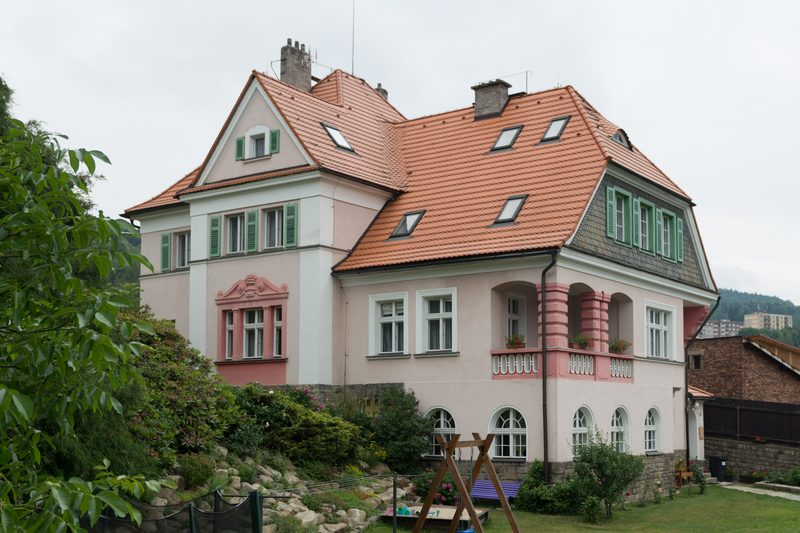
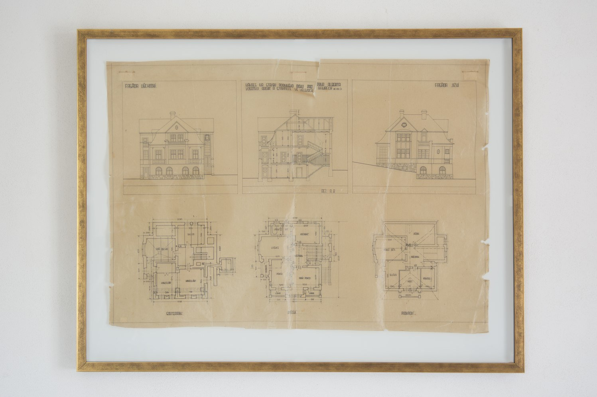
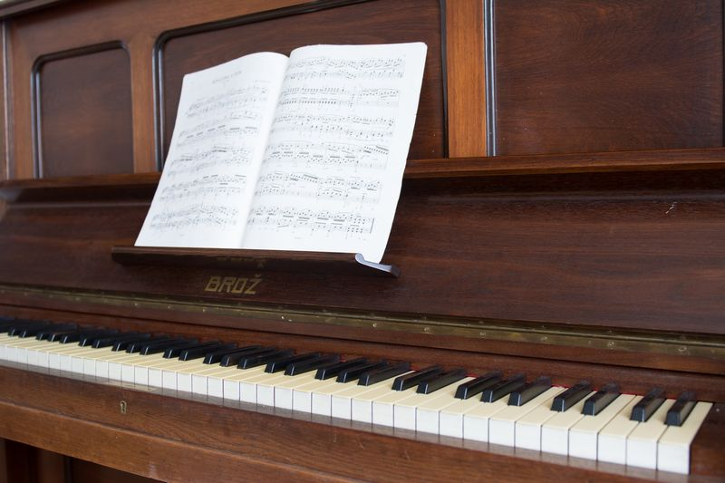
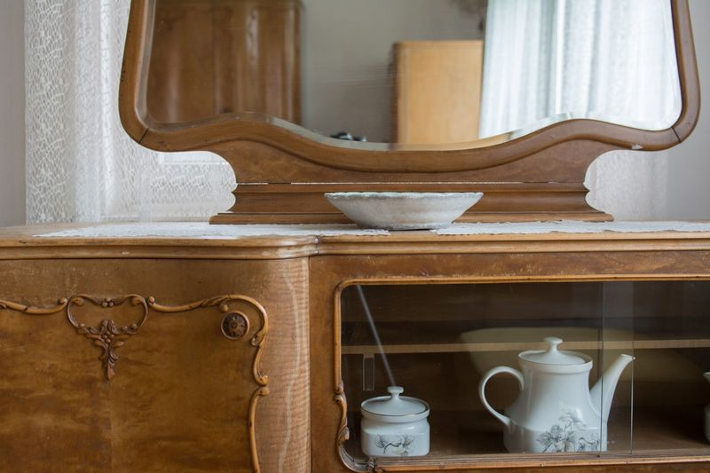
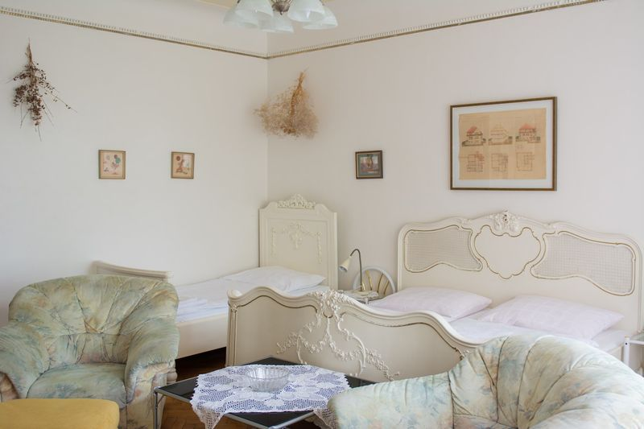

Vila z roku 1921
Vilu si v roce 1921 postavil Ing. Albert Vosátko, významný stavitel zdejšího kraje. V roce 2009 prošla rekonstrukcí a stal se z ní penzion. Zůstala stoletá dřevěná okna, původní dveře, zábradlí a trámy pod střechou.
Penzion má Zlatý certifikát kvality Libereckého kraje.

Vosátkovy plány


Apartmán Viktorie
„Prvorepubliková vila pořád dýchá působivou atmosférou – obzvláště pak velkorysý apartmán Viktorie, v němž si připadáte jako v časech dávno minulých, ale s komfortem dvou koupelen a báječným kávovarem.“ Marie



